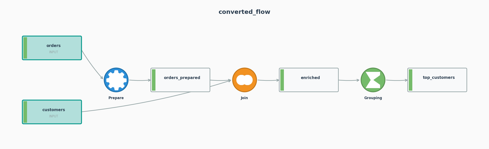
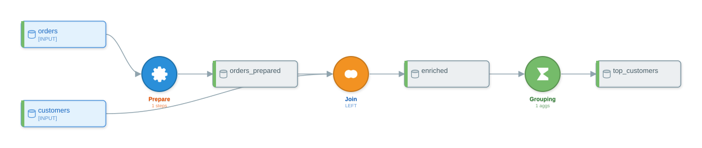
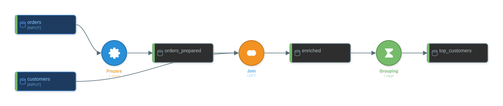

Chapter 13 — Visual Aids and Flow Inspection¶
What you'll learn¶
This is the canonical reference for every way py-iku lets you interrogate and render a DataikuFlow. The chapter covers programmatic inspection (summaries, derived dataset views, DAG navigation, structural diff), round-trip serialization to JSON and YAML, every visualization format the library ships (ASCII, Mermaid, PlantUML, SVG, PNG, PDF, HTML, interactive HTML), the two built-in themes, the three Jupyter rendering hooks, and a "which format when" decision matrix to pick the right output without guesswork.
The fixture flow¶
Every section below operates on the same three-recipe flow so the outputs can be compared side by side. The source script reads two CSVs, fills missing discounts on orders, joins to customers, and aggregates per customer.
from py2dataiku import convert
SOURCE = """
import pandas as pd
orders = pd.read_csv('orders.csv')
orders_clean = orders.fillna(0.0)
customers = pd.read_csv('customers.csv')
enriched = orders_clean.merge(customers, on='customer_id', how='left')
top_customers = enriched.groupby('customer_id').agg({'quantity': 'sum'}).reset_index()
"""
flow = convert(SOURCE)
The result has three recipes (PREPARE, JOIN, GROUPING) and five datasets (two inputs, three intermediates). That shape is small enough to inspect in full and big enough to exercise every method on DataikuFlow and FlowGraph.
Programmatic inspection¶
The first job, before any rendering, is to ask the flow what it contains. Every method below is on the public surface and runs in milliseconds on a flow of any realistic size.
flow.get_summary() — one-line headline¶
get_summary() returns a multi-line string covering counts, recipe-type breakdown, and any optimizer notes. It is the right thing to print at the end of a CI conversion step or to drop into a Slack message.
print(flow.get_summary())
# Flow: converted_flow
# Source: unknown
# Generated: 2026-04-26T22:10:40.535254
#
# Datasets: 5
# - Input: 2
# - Intermediate: 3
# - Output: 0
#
# Recipes: 3
# - grouping: 1
# - join: 1
# - prepare: 1
#
# Optimization Notes:
# - prepare: 1 recipe(s)
# - join: 1 recipe(s)
# - grouping: 1 recipe(s)
flow.recipes and flow.datasets — direct lists¶
The two collections that back every other view. Both are plain Python lists, so indexing, comprehensions, and len() work as expected.
print([r.name for r in flow.recipes])
# ['prepare_1', 'join_2', 'grouping_3']
print([d.name for d in flow.datasets])
# ['orders', 'orders_prepared', 'customers', 'enriched', 'top_customers']
flow.input_datasets, intermediate_datasets, output_datasets — derived views¶
These are properties that filter flow.datasets by dataset_type. They are not separate lists — mutating flow.datasets reflects in all three. The rule-based path classifies any dataset that is neither read by an external sink nor referenced as a source as intermediate; the LLM path covered in Chapter 7 handles output naming differently.
print([d.name for d in flow.input_datasets])
# ['orders', 'customers']
print([d.name for d in flow.intermediate_datasets])
# ['orders_prepared', 'enriched', 'top_customers']
print([d.name for d in flow.output_datasets])
# []
flow.graph.topological_sort() — node order¶
flow.graph returns a FlowGraph — a DAG view over the same underlying data. topological_sort() runs Kahn's algorithm and returns a flat list of node names in dependency order; recipe nodes are prefixed recipe: to disambiguate them from datasets that share a name.
for n in flow.graph.topological_sort():
print(" ", n)
# orders
# customers
# recipe:prepare_1
# orders_prepared
# recipe:join_2
# enriched
# recipe:grouping_3
# top_customers
The topological order is what every downstream tool that needs to iterate the flow uses, including the deployer covered in Chapter 11.
flow.graph.detect_cycles() — cycle check¶
Cycle detection runs depth-first from every node and returns a list of cycles, each as a list of node names. A flow produced by convert(...) is a DAG by construction, so the result is always empty; the method is useful when constructing flows by hand or round-tripping through formats that allow malformed input. A non-empty return value means the flow cannot be deployed — DSS rejects cyclic flows at validation time — and should be treated as a hard error.
flow.graph.find_disconnected_subgraphs() — orphan detection¶
Finds connected components in the undirected sense. A typical converted flow has one component; multiple components show up only when the input script defines two unrelated pipelines in the same file. Each component is returned as a set of node names.
DAG navigation: get_predecessors, get_successors, get_roots, get_leaves, get_path¶
Five methods cover every navigation question that comes up in practice: what feeds this node, what does this node feed, where does the flow start, where does it end, and is there a path between two named nodes.
print(flow.graph.get_predecessors("recipe:join_2"))
# ['orders_prepared', 'customers']
print(flow.graph.get_successors("recipe:join_2"))
# ['enriched']
print(flow.graph.get_roots())
# ['orders', 'customers']
print(flow.graph.get_leaves())
# ['top_customers']
print(flow.graph.get_path("orders", "top_customers"))
# ['orders', 'recipe:prepare_1', 'orders_prepared',
# 'recipe:join_2', 'enriched', 'recipe:grouping_3', 'top_customers']
get_path runs BFS and returns the shortest path or None. For lineage tracing on a single column rather than node-level paths, flow.get_column_lineage(column) is the right entry point — it walks recipes backward and reports each transformation that touched the named column.
Typed node access: recipe_nodes and dataset_nodes¶
When iteration is the goal and the node-type filter is the question, the two typed properties on FlowGraph are O(V) reads with no allocation overhead beyond the returned list.
print([n.name for n in flow.graph.recipe_nodes])
# ['recipe:prepare_1', 'recipe:join_2', 'recipe:grouping_3']
print([n.name for n in flow.graph.dataset_nodes])
# ['orders', 'orders_prepared', 'customers', 'enriched', 'top_customers']
flow.optimization_notes — what the optimizer did¶
After the optimizer pass runs (see Chapter 10), it deposits a list of human-readable strings on flow.optimization_notes. The strings are stable enough to assert against in CI when the test wants to confirm a specific merge happened; they are not stable enough to parse. Read them, do not regex-extract from them.
for n in flow.optimization_notes:
print(" -", n)
# - prepare: 1 recipe(s)
# - join: 1 recipe(s)
# - grouping: 1 recipe(s)
The fixture has only one PREPARE in the input, so no merging happens. A flow with two adjacent PREPAREs that the optimizer collapses produces a Merged 'prepare_1' + 'prepare_2' -> 'prepare_merged_prepare_1' line — that string is the optimizer's audit trail for the merge.
flow.diff(other) — structural comparison¶
Comparing two flows by hand is error-prone; flow.diff(other_flow) returns a structured dict with five keys: added, removed, changed, dataset_added, dataset_removed, plus an equivalent boolean. The diff is recipe-name-keyed and reports differences in recipe_type, inputs, and outputs. Settings-level differences (e.g. left vs inner join) are not compared — the diff is structural, not semantic.
SOURCE_B = """
import pandas as pd
orders = pd.read_csv('orders.csv')
orders_clean = orders.fillna(0.0)
customers = pd.read_csv('customers.csv')
enriched = orders_clean.merge(customers, on='customer_id', how='left')
enriched = enriched.sort_values('customer_id')
top_customers = enriched.groupby('customer_id').agg({'quantity': 'sum'}).reset_index()
"""
flow_b = convert(SOURCE_B)
import json
print(json.dumps(flow.diff(flow_b), indent=2))
# {
# "added": [
# {"name": "grouping_4", "type": "grouping"},
# {"name": "sort_3", "type": "sort"}
# ],
# "removed": [
# {"name": "grouping_3", "type": "grouping"}
# ],
# "changed": [],
# "dataset_added": ["enriched_sorted"],
# "dataset_removed": [],
# "equivalent": false
# }
The added sort_values shows up as one new SORT recipe plus a renumbered GROUPING — the rule-based generator's recipe-name counter advances when a new recipe is inserted, so adjacent recipes get fresh names. Asserting against equivalent in CI is the cheapest way to detect any structural drift between two conversions of the same script.
Round-trip serialization¶
The flow object is checked-in artifact-shaped: it serialises to JSON and YAML, both round-trip through from_json / from_yaml, and save/load auto-detect the format from the file extension. Nothing in the inspection layer above mutates the flow, so round-tripping commutes with any of those reads.
to_dict(include_timestamp=False) for byte-stable comparisons¶
to_dict() is the underlying representation; to_json and to_yaml are thin wrappers. The include_timestamp argument is the flag that makes the dict suitable for byte-level comparison — without it, the same conversion run twice produces dicts that differ by one wallclock field.
d1 = flow.to_dict(include_timestamp=False)
d2 = convert(SOURCE).to_dict(include_timestamp=False)
print(d1 == d2)
# True
That property is what makes the fixture-pinning pattern in Chapter 11 viable: a recorded to_dict(include_timestamp=False) is a faithful checkpoint that can be diffed in PR review.
to_json() / from_json()¶
JSON is the exchange format of choice for CI artifacts and for any downstream tool that reads a flow as data.
from py2dataiku import DataikuFlow
js = flow.to_json()
flow_j = DataikuFlow.from_json(js)
assert [r.name for r in flow_j.recipes] == [r.name for r in flow.recipes]
to_yaml() / from_yaml()¶
YAML is the right choice when the flow lives next to human-edited config (a pyproject.toml block, a Helm chart). The YAML serialiser preserves key order and uses block style, so diffs read cleanly.
ya = flow.to_yaml()
print(ya.split("\n")[0])
# flow_name: converted_flow
flow_y = DataikuFlow.from_yaml(ya)
assert len(flow_y.recipes) == len(flow.recipes)
flow.save(path) and DataikuFlow.load(path) — extension auto-detection¶
save accepts .json, .yaml, .yml, .svg, .html, .png, .pdf, .puml/.plantuml, .txt, and .md/.mermaid — the format is inferred from the extension unless the caller passes format= explicitly. load is symmetric only for the data formats (.json, .yaml, .yml); the visual formats are not round-trippable.
import tempfile, os
with tempfile.TemporaryDirectory() as tmp:
flow.save(os.path.join(tmp, "flow.json"))
flow.save(os.path.join(tmp, "flow.yaml"))
rebuilt = DataikuFlow.load(os.path.join(tmp, "flow.json"))
print(len(rebuilt.recipes))
# 3
Visualization formats¶
Every format in this section is produced from the same fixture flow. The library currently ships seven visualizers: ASCII, Mermaid, PlantUML, SVG, HTML, interactive HTML, and matplotlib (PNG). PDF is generated by routing SVG through cairosvg. The dispatcher is flow.visualize(format=...); the convenience methods to_svg, to_ascii, to_html, to_plantuml, to_png, and to_pdf cover the most common saves.
ASCII — pure text DAG¶
The ASCII renderer is the right choice for a terminal session, a CI log, or anywhere a fixed-width text artifact is the only viable option. It draws boxes with Unicode line-drawing characters and a small legend.
print(flow.to_ascii())
# (excerpted)
# ════════════════════════════════════════════════════════════════════════════════
# DATAIKU FLOW: converted_flow
# ════════════════════════════════════════════════════════════════════════════════
#
# ┌──────────────────┐
# │ orders │
# │ [INPUT] │
# └──────────────────┘
# │
# ▼
# ┌──────────────┐
# │ PREPARE │
# │ 1 steps │
# └──────────────┘
# ...
Mermaid — Markdown-embeddable diagram source¶
Mermaid syntax embeds directly in GitHub PR descriptions, GitLab issues, and any Markdown renderer that supports the mermaid fenced-block extension. The text is the artifact — there is no binary to ship.
flowchart TD
subgraph inputs[Input Datasets]
D0[(orders)]
D2[(customers)]
end
D1[(orders_prepared)]
D3[(enriched)]
D4[(top_customers)]
R0{Prepare\n(1 steps)}
R1{Join\n(LEFT)}
R2{Grouping\n(1 aggs)}
D0 --> R0
R0 --> D1
D1 --> R1
D2 --> R1
R1 --> D3
D3 --> R2
R2 --> D4PlantUML — long-form documentation diagram¶
PlantUML is the right choice for design docs in Confluence or any wiki that has a PlantUML plugin, and for printed engineering documents where the rendered diagram needs to be regenerable from source.
print(flow.to_plantuml())
# @startuml
# !theme plain
# ... (skinparam blocks) ...
# rectangle "orders" <<input>> as orders
# rectangle "customers" <<input>> as customers
# rectangle "orders_prepared" <<intermediate>> as orders_prepared
# ...
# orders --> recipe_0
# recipe_0 --> orders_prepared
# orders_prepared --> recipe_1
# customers --> recipe_1
# recipe_1 --> enriched
# enriched --> recipe_2
# recipe_2 --> top_customers
# @enduml
SVG — vector¶
SVG is the primary format. It is what _repr_svg_ returns to Classic Jupyter, what the matplotlib renderer falls back from, and what to_pdf and the PNG path eventually consume. Because it is vector, it scales to any slide-deck or print resolution without re-rendering.

PNG — raster (matplotlib renderer)¶
flow.visualize(format="png") routes through MatplotlibVisualizer and returns raw PNG bytes. flow.save("file.png") writes the same bytes. The matplotlib path is preferred for PNG over the cairosvg-of-SVG path because it gives finer control over DPI and font rendering on the matplotlib side.
png_bytes = flow.visualize(format="png")
with open("docs/textbook/assets/visual-aids/fixture-flow.png", "wb") as f:
f.write(png_bytes)

PDF — print¶
to_pdf routes the SVG output through cairosvg, which must be installed (pip install cairosvg). The result is a one-page vector PDF, suitable for printing or for embedding in a LaTeX document.
The PDF is at assets/visual-aids/fixture-flow.pdf.
HTML — embeddable¶
to_html produces a self-contained HTML document with the SVG inlined and minimal CSS. Drop it into a static-site generator, attach it to an email, or open it directly in a browser.
The HTML page is at assets/visual-aids/fixture-flow.html.
Interactive HTML — pan, zoom, hover¶
flow.visualize(format="interactive") returns a richer HTML document with embedded JavaScript for pan, zoom, search, and hover-highlighting. It is dispatched through InteractiveVisualizer and ships as a single self-contained file.
interactive = flow.visualize(format="interactive")
with open("docs/textbook/assets/visual-aids/fixture-flow-interactive.html", "w") as f:
f.write(interactive)
The interactive page is at assets/visual-aids/fixture-flow-interactive.html.
Markdown / TXT — fallback¶
flow.save("file.md") writes the Mermaid source; flow.save("file.txt") writes the ASCII text. Both are convenience extensions for the dispatcher and produce no new content beyond what the corresponding visualize(format=...) call returns.
Themes¶
py2dataiku.visualizers.themes exports two themes: DATAIKU_LIGHT (the default) and DATAIKU_DARK. The theme controls background, recipe-fill gradients, edge colour, and label colour; the layout is identical between them. Pass the theme to a visualizer directly.
from py2dataiku.visualizers import DATAIKU_DARK, DATAIKU_LIGHT, SVGVisualizer
light = SVGVisualizer(theme=DATAIKU_LIGHT).render(flow)
dark = SVGVisualizer(theme=DATAIKU_DARK).render(flow)
with open("docs/textbook/assets/visual-aids/fixture-flow-light.svg", "w") as f:
f.write(light)
with open("docs/textbook/assets/visual-aids/fixture-flow-dark.svg", "w") as f:
f.write(dark)
| Light | Dark |
|---|---|
 |
 |
The default to_svg() path uses DATAIKU_LIGHT; pass a theme through SVGVisualizer(theme=...) to override. The matplotlib (PNG) path takes a theme= kwarg on flow.visualize(format="png", theme=...).
DSS visual fidelity (sprint 6)¶
The static visualizers were upgraded to mimic the real Dataiku DSS flow view, not just present the same information. Three things changed and they are visible in every output above:
- Recipe nodes are solid colored circles (no longer rounded rectangles). Each recipe-type family has a fixed hue: blue for PREPARE / SPLIT / FILTER, orange for JOIN / SPARK, green for GROUPING, purple for WINDOW, gold for ML scoring, dark slate for PYTHON / SHELL, gray for SORT / DISTINCT / SAMPLING. The full mapping lives in
themes.recipe_paletteand is the single source of truth across SVG, PNG, PDF, HTML, Mermaid, and PlantUML. - Datasets carry a connection-type stripe on their left edge: green = filesystem, blue = SQL warehouse (Postgres / Snowflake / BigQuery / Redshift / MySQL), orange = blob storage (S3 / GCS / Azure / HDFS), purple = NoSQL (Mongo / Cassandra / DynamoDB), yellow = HTTP / API, red = inline. The mapping is
themes.connection_stripesand is keyed by the values ofDatasetConnectionType. - Recipe icons are real glyphs: the gear for PREPARE, the bowtie ⋈ for JOIN, the Σ for GROUPING, the ↑ for SORT, the funnel for FILTER, the lightning bolt for Spark variants, the snake for Python, the database cylinder for SQL — 25+ recipe types covered. The icons are inline SVG paths in
RecipeIcons.SVG_PATHS(24×24 viewBox) and are rasterized at 96px for the matplotlib PNG / PDF renderers whencairosvgis available; otherwise the renderers fall back to a single-character Unicode glyph fromRecipeIcons.GLYPHS.
The Mermaid renderer emits a classDef per recipe-type family so users can theme the output further:
classDef joinRecipe fill:#f29222,stroke:#c4761a,color:#ffffff,stroke-width:2px;
classDef groupingRecipe fill:#75bb6a,stroke:#5a9151,color:#ffffff,stroke-width:2px;
class join_2 joinRecipe;
class grouping_3 groupingRecipe;The PlantUML renderer emits one BackgroundColor<<recipe_type>> skinparam per palette entry, so every recipe type has a stable stereotype.
The default layout is left-to-right (200 px between columns, 100 px between rows) to match DSS. Pass layer_spacing= and node_spacing= to LayoutEngine if you need tighter or looser packing.
Jupyter integration¶
Three repr hooks on DataikuFlow cover the three notebook frontends in common use. None of them require an explicit flow.visualize(...) call — typing flow at the end of a cell is enough.
_repr_svg_ — Classic Jupyter¶
Classic Jupyter notebooks call _repr_svg_ directly when the cell's last expression is a DataikuFlow. The method delegates to flow.visualize(format="svg"), so the inline rendering matches what to_svg() would write to disk.
_repr_html_ — HTML-friendly notebooks and reporting tools¶
Some notebook frontends and reporting tools display HTML reprs differently — wrapped in their own container, scrollable, with additional metadata. _repr_html_ returns the SVG inline wrapped in a minimal <div class="py-iku-flow"> fragment, which keeps the styling under the host frontend's control.
_repr_mimebundle_ — JupyterLab and VS Code¶
JupyterLab 3+ and VS Code's notebook frontend prefer _repr_mimebundle_ over the format-specific reprs. Without this method, those frontends fall back to the plain Python repr string and the user assumes the library does not render flows. The method returns a dict with two keys, image/svg+xml and text/plain, so the frontend can pick whichever it prefers.
The three methods are independent — every notebook frontend in regular use ends up calling exactly one of them, and the library implements all three so no frontend silently falls through to a plain repr.
Which format when¶
| Goal | Best format | Why |
|---|---|---|
| Quick terminal check | to_ascii() |
No binary, no dependencies, copy-pasteable into a chat |
| Embed in a PR description | visualize(format="mermaid") |
GitHub renders Mermaid in fenced blocks; no asset to host |
| Slide deck | to_svg() or PNG via visualize(format="png") |
SVG scales without pixelation; PNG embeds anywhere |
| Wiki / Confluence | PNG or to_plantuml() |
Confluence renders PlantUML natively if the plugin is installed; PNG is the universal fallback |
| Print or LaTeX | to_pdf() |
Vector, single page, paper-size-aware |
| AI / code-review tool | Mermaid or PlantUML (text) | Text-only diagrams are diffable in version control |
| Notebook inline | rely on _repr_svg_ / _repr_mimebundle_ (no explicit call) |
Frontends pick the right repr automatically |
| Diff two flows | flow.diff(other) |
Structured dict, recipe-name-keyed, machine-readable |
| CI artifact | to_json() plus to_svg() |
JSON for asserts, SVG for the human reviewer attached to the build |
| Customer-facing page | to_html() or interactive HTML |
Self-contained, no static-asset pipeline required |
The matrix is opinionated. Two heuristics override it. First, anywhere the artifact has to survive a year — pick a vector format (SVG or PDF) so a future regenerate reproduces it cleanly. Second, anywhere the audience is going to ask "what changed?" — pick the structured diff (flow.diff) and render the difference, not the post-change shape alone.
Further reading¶
- Glossary — definitions for dataset, recipe, processor, optimizer, topological order, lineage.
- Cheatsheet — visualization quick reference with one-line invocations.
- Chapter 3, Anatomy of a Flow —
FlowGraphdeep dive and the round-trip serialization contract. - Chapter 10, Optimization and the DAG — what the optimizer does and how to read
optimization_notes. - Models API reference —
DataikuFlow,DataikuRecipe,DataikuDataset. - Graph API reference —
FlowGraphand DAG operations. - Visualizers API reference — every visualizer class and its render method.
- Notebook 04: expert patterns — exercises every visualization format on the V5 running example.
What's next¶
This is the final numbered chapter. Move on to the appendices: A for terms, B for known issues and fixes, C for the printable cheatsheet.